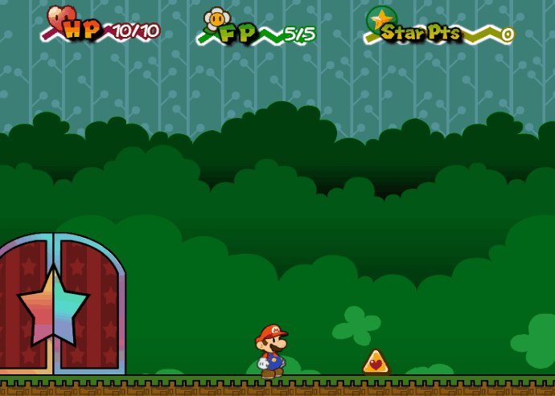

Personal Project: Game Design
Background:
When I was in middle school, I became fascinated with the idea of creating my own video game. I found a tool called Game Maker and began to tinker with it. The program had a drag-and-drop interface for those with no programming experience, but every command had a "Game Maker Language" equivalent. Once the user was comfortable, they could shift the project entirely to code. It was this way that I inadvertently learned and become interested in programming.
This game, built in Game Maker 8.0 (before it became Game Maker Studio!) has been a side project of mine ever since. I started in middle school, and I've continued to add to it, refactor it, and apply what I've learned in my degree to improve it. I've also learned many things about graphic design, animation, and level design as a result. The game is still far from complete, but only because I continue to change and improve it as I develop my skills further.

This shows some basic running and jumping and a simple enemy. All of the backgrounds/floors were also drawn by me using Adobe Flash.

The hammer can be used to attack enemies as well as break blocks.

Some '?' Blocks contain vines which can be climbed.

This is an early boss battle. The player has to time his jumps in order to not get crushed, and the boss continues to use other moves and run faster as the battle progresses. The boss was drawn and animated by me.

Badges can be found in hidden areas. Equipping a badge can give you upgrades such as extra health, more attack power, or new moves. Wearing a badge costs BP, or badge points.

This game is filled with puzzles that the player must solve in order to proceed. Try to imagine how the player might proceed higher in the room after using the key to find the "hammer" item, which can break the yellow block in his way.

The player will join up with various characters throughout the game. These characters will follow him around and provide a variety of additional abilities.

When enough enemies are defeated, the player levels up and can choose a stat to upgrade. HP (Health Points) is health, FP (Flower Points) is used for special moves, and BP (Badge Boints) is used to equip badges.